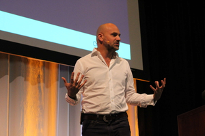

Selbstdarstellung Mark Shuttleworth (2005)
Hinweis:
Bei diesem Text handelt es sich um eine Übersetzung dieser englischen Seite im Ubuntu-Wiki. Der Originaltext stammt im wesentlichen aus dem Oktober 2005.
Über mich¶
IRC: sabdfl auf irc.freenode.net
Hintergrund: Ich bin 37 Jahre alt, Südafrikaner und lebe in London. Einen Großteil meiner Freizeit widme ich dem Ubuntu-Projekt, als Cheerleader und Einpeitscher. Das letzte Jahr lang lag mein Schwerpunkt auf der Launchpad-Infrastruktur  , bei der ich einen Großteil des Codes geschrieben und dem Team geholfen habe, unsere Ziele zu definieren. Es fühlt sich gut an, dies alles nun endlich in Aktion zu sehen! Mehr Details auf markshuttleworth.com .
, bei der ich einen Großteil des Codes geschrieben und dem Team geholfen habe, unsere Ziele zu definieren. Es fühlt sich gut an, dies alles nun endlich in Aktion zu sehen! Mehr Details auf markshuttleworth.com .
FAQs: Wieso Ubuntu? Wohin geht die Reise?¶
| Mark in der ISS (Bildquelle) |
Ubuntu ist nicht ohne Kontroversen. Das ist auch gut so (zumindest meiner Meinung nach), da es darauf hinweist, dass wir so nicht nur den Status quo herausfordern, sondern auch einige Risiken eingehen. Meine persönliche Motivation, das Projekt finanziell zu unterstützen und mich so stark in Ubuntu einzubringen, liegt vor allem an diesen beiden Dingen. Ich mag es, etablierte Denkstrukturen zu durchbrechen und Risiken einzugehen. Dieses Dokument hier wurde geschrieben, um der Community einen Einblick in meine Gedankengänge über einige der umstrittenen Entscheidungen und Themen zu geben, und zu einem gewissen Grad auch in die des "Community Council", "Technical Boards" und der andere Kontrollorgane.
Ich versuche auf Gerüchte, oft gestellte Fragen, gängige Anschuldigungen und Behauptungen einzugehen und lege natürlich auch Kontroversen offen, sowohl innerhalb des Teams ("unser Standard Desktop sollte *lila* sein") als auch im Umfeld der Open-Source Community ("Alarm! Alarm! Ubuntu wird ein kommerzielles Projekt!"). Bestimmt habt auch ihr schon solche Dinge gehört. Dieses Dokument kann als meine "canonical" [Anmerkung der Übersetzer: "authentische", ein Wortspiel mit dem Firmennamen Canonical] Perspektive verstanden werden, und wo es notiert ist, auch als die offizielle Position des Ubuntu Community Councils (CC) und der Technical Boards. Falls ihr noch Fragen habt oder hier weitere Themen behandelt sehen wollt, weist uns bitte bei einem CC-Treffen im IRC darauf hin. Meldet euch bei mir oder den anderen Mitgliedern des CC oder schreibt dazu auf der Mailing-List ubuntu-devel.
Warum "mache" ich Ubuntu?¶
Natürlich um den Bug Nr. 1 zu beheben [Anmerkung der Übersetzer: gemeint ist die Vormacht von Microsoft]. Ich glaube fest daran, dass freie Software das Versprechen des freien Zugangs zu den Werkzeugen der digitalen Ära hält und uns in ein neues Technologiezeitalter bringen wird. Ich treibe Ubuntu an, weil ich dieses Versprechen gern umsetzen würde.
Wird Ubuntu je Lizenzzahlungen oder sonstige Nutzungsgebühren verlangen?¶
Nein. Niemals. Ich habe kein Interesse daran, mich mit Ubuntu der proprietären [Anmerkung der Übersetzer: auf Urheberrecht und Patente beruhend] Software-Industrie anzuschließen - sie ist ein schreckliches Geschäft, langweilig und mühsam, und stirbt sowieso bald aus. Meine Motivation und mein Ziel ist es, einen Weg zu finden, mit dem man ein weltweites Desktop-Betriebssystem erschafft, das in allen Belangen frei und zukunftsfähig ist und eine mit kommerziellen Produkten vergleichbare Qualität hat. Dies versuche ich zu erreichen. Und wenn wir scheitern, dann werde ich mich nach einem anderen Projekt umsehen, aber bestimmt keinen Schulterschluss mit der proprietären Software-Industrie üben. Ich glaube sowieso nicht, dass es nur ein einziger Entwickler von Ubuntu oder die Menschen der Community aushielten, wenn ich plötzlich verrückt werden würde und das trotzdem versuchte.
Wenn euch das noch nicht genügt, dann werdet ihr es bestimmt gern hören, dass Canonical mit Regierungen diesbezügliche Vereinbarungen abgeschlossen hat: Canonical garantiert, dass es nie eine kommerzielle Version von Ubuntu einführen wird. Es wird nie einen Unterschied zwischen dem "kommerziellen" und dem "kostenlosen" Produkt geben, also anders, als es bei Red Hat (RHEL und Fedora) der Fall ist. Ubuntu wird immer frei sein.
Wenn ihr trotzdem für Ubuntu oder für irgendetwas, das Ubuntu-Code enthält, bezahlen wollt, dann könnt ihr das tun. Es gibt zum Beispiel schon Ubuntu Code in Linspire, für das man bezahlen muss (w00t!). Obwohl Linspire momentan noch nicht direkt auf Ubuntu basiert, ist es nicht unwahrscheinlich, dass die Verantwortlichen von Linspire eines Tages herausfinden werden, dass dass sinnvoll wäre. Es ist möglich, dass es viele spezialisierte Versionen von Ubuntu unter anderem Namen geben wird, die kommerzielle oder proprietäre Funktionen in sich haben. Sie könnten zum Beispiel proprietäre Schriftarten, Software-Erweiterungen oder eine Integration von unfreien Diensten enthalten. Ebenfalls ist es wahrscheinlich, dass es viele proprietäre Programme für Ubuntu geben wird (es gibt sie schon jetzt, Opera [Anmerkung der Übersetzer: ein Browser] für Ubuntu zum Beispiel). Aber Canonical und ich, ebenso wie das CC und das Technical Board, werden nie eine "Ubuntu Professional Edition ($XX.00)" entwickeln. Es wird definitiv kein "Ubuntu Vista" geben.
|  |
| Mark auf dem UbuCon Summit 2016 |
Wie kann Ubuntu zukunftsfähig sein, wenn es nie eine "Ubuntu Professional Edition" geben wird?¶
Wir haben einige anfängliche Einkünfte aus Dienstleistungen rund um Ubuntu. Wir wurden beauftragt, maßgeschneiderte Distributionen anzufertigen und wir nehmen an großen Ausschreibungen für Linux-Projekte teil. In der Regel geschieht dies in Zusammenarbeit mit Firmen vor Ort, wobei unsere Aufgabe die Anpassung der Software ist. Zusätzlich zu unserem ausgedehnten Einsatz in Entwicklungsländern wird Ubuntu vielleicht schon bald im NASA's Moffett Field Einzug halten... Wir haben also die Basis für eine zukunftsfähige Plattform gelegt, und ich bin überzeugt, dass wir gute Chancen haben, Ubuntu so weit zu bringen, dass es sich durch weiteres Wachstum selbst finanziert.
Wie es letztendlich kommen wird, ist aus wirtschaftlicher Perspektive nur schwer abzuschätzen. Ich habe diese Antworten nicht. Das ist Okay, wir befinden uns mit dem Ubuntu-Projekt auf einer gewagten Reise, die gerade erst begonnen hat. Ich erwarte auch nicht, diese Antworten zu kennen. Ich persönlich kann meine Investitionen in Ubuntu mit humanistischen Gründen rechtfertigen (jedenfalls das Geld, das wir in die Entwicklung von Open-Source-Software und Plattformen wie Launchpad stecken), weil ein Großteil meines Glücks und Reichtums im Leben nur durch Open-Source-Werkzeuge zu Stande kam. Ich freue mich, jetzt der Community etwas zurückgeben zu können. Weil wir geliehenes Geld aufwenden, muss Ubuntu schnell tragfähig werden. Momentan verdienen wir Geld mit dem Angebot von Zertifizierungen (für Entwickler, Administratoren, Programme und Hardware) und der Umsetzung von Kundenwünschen (ihr wollt eine eigene, auf Ubuntu basierte Distribution? Meldet euch!). Der Bedarf an solchen Dienstleistungen steigt. Ich bin sehr zuversichtlich, dass ich Canonical dabei zum Durchbruch verhelfen kann. Und dies wird garantieren, dass Ubuntu weiter "rocken" wird, selbst wenn es für mich Zeit ist, ins All zurück zu kehren und ich die falsche Sojus nehme [Anmerkung der Übersetzer: Shuttleworth war "Weltraumtourist"].
Es ist ebenso wichtig, zwischen Canonical und der Ubuntu-Foundation zu unterscheiden. Einerseits ein profitorientiertes Unternehmen und andererseits eine Non-Profit-Organisation, die das Ziel hat, Ubuntu weiter voranzutreiben. Mit der Ankündigung der Ubuntu Foundation habe ich gleichzeitig auch ein Zugeständnis gemacht: "Okay, das Projekt hat Beine, ich investiere genug Kapital, um es laufen zu lassen, egal was mit mir oder Canonical passieren wird". Wir haben also genug Zeit, das Projekt zukunftssicher zu machen. Wenn ihr dabei mithelfen wollt, sendet eure Aufträge das nächste Mal an Canonical, wenn ihr etwas mit Ubuntu umgesetzt haben wollt. Wir werden euch nicht enttäuschen!
Wie sieht es mit der Kompatibilität zwischen den Distributionen aus?¶
Es wurde viel darüber gesprochen, dass Debian nicht kompatibel mit Ubuntu sei. Beispielsweise tauchen häufig folgende Fragen auf: "Ich kann keine Ubuntu-Pakete auf Debian installieren", "Wieso verwendet Ubuntu gcc4 aber Debian gcc3.3?" oder "Wieso sind der Kernel und glibc auf Ubuntu 5.04 unterschiedlich zu Debian Sarge". Ich möchte diese Fragen nun klären.
Ich werde zunächst einmal unsere policy und Prinzipien erläutern, um dann auf einige dieser Beispiele gezielt einzugehen.
Erstens, Kompatibilität ist nicht für alle das gleiche. Wer die Ausarbeitung des LSB-Standards verfolgt hat, versteht, wie schwierig es ist, diesem Begriff eine einheitliche Bedeutung über alle Distributionen hinweg zu geben. Und genau darum ist die Kompatibilität von Paketen kein Ziel von Ubuntu. Manchmal funktioniert es, oft durch Zufall oder weil jemand die Chance genutzt hat, es umzusetzen, aber nicht, weil es eines unserer Ziele ist.
Um das klar zu stellen betone ich es nochmals: Die Kompatibilität der Pakete zu anderen Distributionen ist nicht das Ziel von Ubuntu. Warum?
Kurz gesagt, weil wir an freie Software als Gemeinschaftsprojekt mit dem Fokus auf Open-Source-Software glauben und dieser Ansatz dem der proprietären Industrie (der auf spezifischen Programmen und binären Bits basiert) überlegen ist. Wir stecken einen Großteil unserer Energie in die Verbesserung von frei verfügbarem Quellcode, anstatt auf einer Binärbasis zu arbeiten, die nur schlecht geteilt werden kann. Wenn wir Stunden damit verbringen, eine Funktion einzuarbeiten, sollte diese Arbeit auf so vielen Distributionen wie möglich benutzbar sein. Darum veröffentlichen wir den Quellcode zeitgleich mit neuen Paketversionen. Wir bemühen uns, die Patches in einem einfachen Format universell nutzbar zu machen, so dass sie in andere Distributionen eingearbeitet werden können. So profitiert Debian, aber auch Suse und Red Hat, wenn sie bereit sind, sich die Patches anzuschauen und sie anzuwenden.
Wir synchronisieren unsere Entwicklung regelmäßig mit Upstream und Debian, ebenso mit anderen Distributionen wie Suse, Gentoo, Mandrake und Red Hat. Es wird Code der neuesten Upstream-Projekte (die nicht einmal unbedingt in Debian, Red Hat oder gar im LSB sein müssen) genutzt, und wir versuchen, alle sechs Monate mit Debian Unstable (sid) zu synchronisieren. Wir haben keine Kontrolle über den Veröffentlichungszyklus von anderen Distributionen, auch nicht über Upstream, so dass es uns gar nicht möglich ist, im Voraus eine API oder ABI für jede neue Version zu erstellen. Jedes Mal, wenn wir Ubuntu für eine neue Version einfrieren, sind wir auf Hunderte von Entwicklern angewiesen. Obwohl die Community sehr schnell wächst, ist sie für die Gestaltung der Distribution noch immer klein, verglichen mit der Gesamtanzahl an Entwicklern in allen möglichen freien Softwareprojekten. Unser Job ist es, das Vorhandene schnell und effizient zu packen, und nicht uns an einem vordefinierten Kompatibilitätsmaßstab zu orientieren. Wir konzentrieren uns darauf, für Server- und Desktop-Versionen die aktuellsten und gleichzeitig stabilsten und elegantesten Software-Pakete zu schnüren. Hätten wir die Paket-Kompatibilität mit Debian als Ziel, wäre unsere Fähigkeit, neue Software oder bessere Integration zu bieten, massiv beeinträchtigt. Wir sind aber der Überzeugung, dass unsere Benutzer in erster Linie die besten und am sinnvollsten integrierten Programme auf der CD haben wollen.
Sogar der Linux-Kernel selbst zieht einen monolithischen Kernel der Kompatibilität vor. Jede Version des Kernels erfordert gegenüber den vorangegangenen Versionen eine separate Kompilierung. Module (Treiber) müssen auch mit der neuen Version kompiliert werden und können nicht einfach in der bestehenden binären Form weitergenutzt werden. Linus [Anmerkung der Übersetzer: Linus Torvalds, der Linux-Gründer] hat hierzu folgendes angemerkt: Es ist besser für den Kernel, wenn der auf Quellcode basierende monolithische Kernel nicht versucht, eine binäre Schnittstelle für Treiber quer durch die Versionen aufrechtzuhalten. Wir glauben, dass dies auch für die Distribution gelten soll.
Somit hebt das Gebot, mit einem sehr aktuellen Code zu arbeiten, das Ziel der Kompatibilität der fertigen Pakete auf.
Aber ich habe gehört, dass Ubuntu weniger kompatibel als ähnliche Projekte ist?¶
Das ist definitiv falsch. Wenn man den Kernel, den X Server, die Clients, die libc-Bibliothek oder einen Compiler bearbeitet, dann macht man sich inkompatibel. Soweit ich unterrichtet bin, hat jede bedeutende Distribution aus gutem Grund an diesen Paketen gearbeitet. So soll sichergestellt werden, dass sie die Bedürfnisse ihrer Benutzer erfüllen. Und dadurch machen sie sich selbst inkompatibel. Was aber Open-Source-Software trotz dieser Einschränkung ausmacht, ist die Tatsache, dass Quellcode und Patches ihren Weg üblicherweise über Distributionen hinweg finden. Und darauf richten wir unsere Aufmerksamkeit und nicht auf binäre Bits in fertigen Paketen.
Manche Leute könnten sagen: "Aber ich habe ein Linspire-Paket unter Ubuntu installiert und es hat funktioniert, also müssen diese zueinander kompatibel sein". Und es ist richtig, dass in manchen Fällen ein Paket von Linspire oder Debian einfach unter Ubuntu funktioniert (TM). Aber es ist eine zufällige und keine zugesicherte Paket-Kompatibilität. "Andere mögen abweichende Erfahrungen gemacht haben" ist nicht die Art, die die meisten akzeptieren würden, und so was könnte schwerlich als Kompatibilität bezeichnet werden. Viele Pakete haben sehr einfache Abhängigkeiten und benötigen keine bestimmten Versionen von Systembibliotheken, darum kann es funktionieren. Aber wenn man unter die Haube schaut, wird man in jeder bedeutenden Distribution - ab einem bestimmten Level - eine Inkompatibilität finden. Die findet man bei Knoppix ebenso wie bei Linspire und DCC (Debian Core Consortium), Ubuntu ist somit keine Ausnahme.
Es ist durchaus möglich, eine neue Distribution zu bauen, bei der man nur eine Paketauswahl aus einer anderen Distribution entnimmt, was auch sehr nützlich ist. Es ist wie das CDD-Projekt (Custom Debian Distribution) und es wird, wie ich glaube, zukünftig auch in der Ubuntu-Welt wichtig werden. Es ist aber nicht von grundlegendem Interesse. Es ist nur eine Paketauswahl, die für eine bestimmte Usergruppe nützlich ist, es bringt aber nicht Open-Source-Software insgesamt voran.
Okay, aber warum übersetzt ihr Pakete neu?¶
Wir stellen sicher, dass sich Ubuntu mit demjenigen Satz von Werkzeugen bauen lässt, der bei Ubuntu Standard ist. Wir haben eine Version des gcc (GNU Compiler Collection) in Ubuntu, die neuer ist als die in Debian und stellen sicher, dass wir alle Pakete in Ubuntu mit dieser neuen Version bauen.
Theoretisch sollte die Nutzung neuerer gcc-Versionen auch bessere Pakete liefern (auch wenn in der Vergangenheit manch neue Version des gcc auch Regressionen enthielt, um den Grundstein für die zukünftige Entwicklung zu legen). Es erlaubt uns auch, mit Änderungen der ABI, hauptsächlich im C++ Code, besser umzugehen und damit die Anzahl der Paketversionen, die in den Archiven liegen müssen, zu reduzieren.
All dies trifft auch auf die Pakete des "universe"-Repositories zu. Dort finden sich viele der Pakete, die von Debian kommen, obwohl es auch alternative Quellen gäbe. Das MOTU-Team ("Masters of the Universe") achtet bei Ubuntu auf diese Pakete und stellt sicher, dass ABI-Änderungen, zum Beispiel ein Wechsel der Pythonversionen, auch dort umgesetzt werden. Um die Konsistenz sicherzustellen, werden diese Pakete ebenso neu übersetzt.
Wie wäre es mit ein paar konkreten Beispielen?¶
Es gibt einige gute Beispiele anderer Distributionen, die das gleiche tun. Ian Murdock und Progeny sprachen laut über dieses Thema, weshalb ich damit anfangen werde. Progeny 1.x war seinerzeit mit dem stabilen Debian Release nicht kompatibel. Echt. Das aktuelle "DCC Alliance" Release nutzt einen anderen Kernel und eine andere libc als Debian Sarge. In beiden Fällen werden Quellcode-Patches von diesen Projekten zu Ubuntu und Debian befördert, und wir nehmen diese auch dankbar entgegen. Das ist es, was Open-Source-Entwicklung, in Hinblick auf den Quellcode selbst und die Zusammenarbeit, leistungsfähiger als proprietäre Entwicklung macht.
Ich möchte die anderen Distributionen nicht auf irgendeine Weise herabsetzen. Es ist wichtig zu betonen, dass glücklicherweise diejenigen, die eine Paket-Kompatibilität am lautesten herbeirufen, dies in ihrer Distribution selbst missachtet haben. In Wirklichkeit ist dies in der Open-Source-Welt einfach nicht so wichtig, und es ist, so gesehen, auch kein Ziel mit hoher Priorität.
Warum war Ubuntu 5.04 (Hoary Hedgehog) kompatibel mit Debian Sarge?¶
Viele Leute berichten darüber, keine Probleme beim Verschieben von Paketen zwischen Ubuntu 5.04 und Sarge zu haben. Trotzdem sind beide nicht völlig kompatibel. Ubuntu 5.04 und Debian Sarge haben leicht abgewandelte und dennoch entscheidend unterschiedliche libc-Versionen. Als Ubuntu 5.04 veröffentlicht wurde, war es kompatibel zu derjenigen Sarge Version, die im deep freeze (= eingefrorener Stand der Entwicklung) war. Nach dem Hoary Release wurde eine Änderung in Debian vorgeschlagen. Um diese Änderung einzuarbeiten hätte das Debian-Team mit der Kompatibilität der bereits freigegebenen Hoary Version brechen müssen. Dies wurde öffentlich diskutiert und es wurde entschieden, diese Änderung durchzuführen. Wir (von Ubuntu) glauben, dass es eine richtige Entscheidung seitens Debian war. Es ist Open-Source-Software, und wir können miteinander arbeiten, wenn wir uns auf den Quellcode konzentrieren. Hätte sich Debian verpflichtet gefühlt, die Änderung nicht einzuarbeiten, nur um die Kompatibilität mit Ubuntu zu bewahren, so wäre die Open-Source-Welt praktisch gesehen verarmt.
Obwohl es also eine Inkompatibilität zwischen diesen zwei Releases gibt, so wurde diese doch nicht durch das Ubuntu-Team eingeleitet. Außerdem unterstützen wir die Entscheidung, die zu dieser Inkompatibilität geführt hat, denn das ist es, was Open-Source-Software stark macht.
Was ist mit dem Übergang zu gcc 4.0?¶
Wir versuchen immer, die neuesten Entwickler-Tools, Bibliotheken und Anwendungen zu integrieren. gcc 4.0 wurde früh in der Breezy-Entwicklung (Ubuntu 5.10) freigegeben, weshalb es gerade recht kam, diesen Compiler zu verwenden. Außerdem bietet gcc 4.0 uns grundlegende Unterstützung für Java Anwendungen, nämlich durch GCJ und GIJ. Dies bedeutet, dass die für Breezy kompilierten C++ Anwendungen eine andere ABI haben als Sarge, das gcc 3.x nutzt.
Dies wurde auch mit den Entwicklern von Debian diskutiert, die eine Integration von gcc 4.0 auch schon geplant haben (obwohl, irgendwie ... das ist derselbe Typ, der seine Pläne zum Diskutieren vorstellt und Selbstgespräche führt  ). Man wurde sich über eine bestimmte Bezeichnung der mit gcc 4 kompilierten Pakete einig. Dadurch kann elegant von einer früheren Ubuntu- (oder Debian-)Version migriert und aktualisiert werden. Das Ubuntu-Team ging dann einen Schritt weiter und stellte Patches für Hunderte von Paketen bereit, die diese entsprechend der Einigung anpassten. Auf die Patches haben alle Debian-Entwickler Zugriff, wodurch es um viel einfacher wird, in Debian auf gcc 4.0 zu migrieren.
). Man wurde sich über eine bestimmte Bezeichnung der mit gcc 4 kompilierten Pakete einig. Dadurch kann elegant von einer früheren Ubuntu- (oder Debian-)Version migriert und aktualisiert werden. Das Ubuntu-Team ging dann einen Schritt weiter und stellte Patches für Hunderte von Paketen bereit, die diese entsprechend der Einigung anpassten. Auf die Patches haben alle Debian-Entwickler Zugriff, wodurch es um viel einfacher wird, in Debian auf gcc 4.0 zu migrieren.
Warum ist der Standard-Desktop von Ubuntu in brauner Farbe?¶
Das allumfassende Thema der ersten Ubuntu-Versionen war und ist "Menschlichkeit". Das treibt uns an beim Artwork, der Paketauswahl und Entscheidungen rund um den Installer. Das standardmäßig eingestellte Desktop-Thema in den ersten vier Versionen von Ubuntu ist "Human" (Menschlichkeit), und es betont warme, menschliche Farben – eben Braun.
In einer Welt, in der die meisten Desktops blau oder grün sind, ist das ziemlich ungewöhnlich, von MacOSX ganz zu schweigen. Teils mögen wir es, dass Ubuntu anders ist, eben wärmer. Der Computer ist nicht einfach mehr ein Ding, es ist eine Erweiterung des Verstandes, der Zugang zu anderen Leuten (via E-mail, VOIP, IRC und über das Netz). Wir wollten aussagen, dass es einzigartig ist, auffallend, bequem und vor allem, menschlich. Wir haben Braun gewählt. Es ist durchaus eine gewagte Wahl, weil der Bildschirm auch feine Abstufungen von blau, grün und rot wiedergeben können muss, um Braun darzustellen. Das letztlich sichtbare Braun mag vielleicht sogar leicht von der Norm abweichen. Aber Monitore und LCD-Schirme sind heutzutage zunehmend standardisiert, so dass wir gedacht haben, das es annehmbar ist. In den Ubuntu-Versionen Hoary und Breezy haben wir dann aufgrund des Feedbacks von Low-End-Laptop- und LCD-Bildschirmbenutzern ein rötliches Braun genommen.
Wird Braun immer die Standardfarbe für den Desktop bleiben?¶
Es ist unwahrscheinlich, das irgendetwas ewig gleich bleibt (vorausgesetzt, Ubuntu wird für immer existieren) 
Unser gegenwärtiger Plan ist, dass Dapper Drake (Ubuntu 6.04 - falls wir unser Freigabeziel im April 2006 erreichen) die letzte der „Braun“-Versionen wird. Nach der Freigabe von Dapper haben wir die Möglichkeit, ein neues Desktop-Thema zu entwerfen. Blau... eher unwahrscheinlich, aber es könnte eine wesentliche Änderung zum jetzigen Thema "Human" geben. Für den Moment bleibt das Thema "Human", also die Grundfarbe Braun, erhalten. Aber nach Dapper wäre eine grundlegende Änderung des Themas durchaus denkbar.
Ist Ubuntu ein Debian-Zweig?¶
Ja, Ubuntu ist ein Zweig... Nein, ist es nicht... Ja, ist es! Ach, was auch immer.
Kurz gesagt sind wir ein Projekt, das intensiv versucht, mit vielen anderen Projekten zusammenzuarbeiten - wie zum Beispiel X.org, GNOME und natürlich Debian. In vielen Fällen ist der Code, den wir liefern, entweder modifiziert oder anders als der Code, den andere Projekte beisteuern. Wenn es dazu kommt, dann versuchen wir unsere Änderungen in einem einfachen Format zu veröffentlichen, so dass andere Projektbetreuer unseren Code verstehen und in ihre Arbeit einbinden können.
In der Praxis haben wir viel Geschick entwickelt, Werkzeuge zu entwickeln, die die Zusammenarbeit mit Upstreams und anderen Distributionen erleichtern. Zum Beispiel haben wir die Herausgabe von Patches automatisiert, die so den Debian-Entwicklern zeigt, welche Patches an ihren Paketen für Ubuntu vorhanden sind. So ist es für sie sehr einfach zu entscheiden, welche Patches sie nehmen und welche nicht. Und offen gesagt wäre es für uns viel einfacher, wenn sie diese nehmen, aber wir können es nicht erzwingen. Viele der Patches sind nur in Ubuntu sinnvoll. Zusätzlich sind diese Patches auch für Gentoo, RedHat, Linspire (ja, echt) und SUSE nutzbar. Und wir wissen, dass sie überprüft und auch einige von ihnen verwendet werden, was irgendwie cool ist.
Zusammenarbeit geht aber auch über Patches hinaus. Wir haben Malone , ein System zum Verfolgen von Fehlern, das ausdrücklich versucht, eine Zusammenarbeit zwischen Ubuntu, anderen Distributionen und Entwicklern umzusetzen. Jeder Fehler kann so überall verfolgt werden, egal, wo im Netzwerk sie sich aufhalten. Das ist ziemlich cool.
Einer der Auslöser, die mich aus dem "Playboy-Business" heraus- und in Ubuntu hereingezogen haben, war das Erscheinen von Werkzeugen wie TLA. Es versprach eine bessere Zusammenarbeit auf Quellcode-Basis zwischen Distros und Upstreams. Wir steckten eine Menge Arbeit in TLA, bis zu dem Punkt, an dem es gut genug aussah, um es BaZaar zu nennen. Dann haben wir es komplett in Python neu geschrieben. Das Ergebnis ist Bazaar-NG oder Bzr, das als Bazaar 2.0 ab März 2006 bekannt sein wird. Warum ist dies wichtig? Weil es nicht annähernd so effektiv ist, Patches überall zu platzieren oder an einen Revisions-Kontrollsystem zu arbeiten. Viele Leute von Ubuntu arbeiten nicht an der Distribution, sie arbeiten an Werkzeugen wie Bazaar und HCT , und wir hoffen, dass wir die Zusammenarbeit in der Open-Source-Welt auf diese Weise deutlich beschleunigen.
Zusammengefasst lässt sich also sagen: Eine Kompatibilität der Pakete zwischen Ubuntu und Debian hat für uns keine Priorität. Wir glauben, dass wir mehr zur Open-Source-Welt beitragen können, indem wir Patches zur Verfügung stellen, um die Paketerstellung von Ubuntu (und Debian) zu verbessern, um eine brandneue (oder brandgefährliche ) Distribution anzubieten, mit der andere arbeiten können. Wir investieren eine Menge Energie, um sicher zu stellen, dass unsere Patches für jeden verfügbar und für Entwickler aller Distributionen und Projekten leicht zugänglich sind. Deshalb glauben wir, dass unsere Arbeit einen langfristigen Nutzen bringen wird. Und wir entwickeln Werkzeuge (siehe Bazaar, Bazaar-NG, Launchpad Rosetta und Malone) in der Hoffnung, dass dies die Open-Source-Gemeinschaft noch effizienter macht.
Wie wäre es wohl, die Community aufzuteilen? Die Ubuntu-Community ist sehr schnell gewachsen, das hat manche Menschen beunruhigt, die glauben, dass dieses Wachstum auf Kosten anderer ablief, insbesondere von Debian.
Die Patches können jedoch so leicht zwischen Ubuntu und Debian ausgetauscht werden, dass mir scheint: Je größer unsere gemeinsame Entwickler-Gemeinde wird, umso besser ist es für beide Projekte. Ubuntu profitiert von einem starken Debian, und Debian profitiert von einem starken Ubuntu. Dies ist insbesondere wahr, da die beiden Projekte unterschiedliche Zielstellungen haben. Ubuntu durchbricht neue Ebenen schneller, und Debian profitiert enorm von den Patches, die dabei herauskommen. Man siehe sich einfach die Changelogs von Debian Sid seit dem Release von Sarge an, und man stellt fest, wie viele Quellenangaben es zu Ubuntu gibt. Und das sind nur diejenigen, die für gut befunden wurden.
Wenn Ubuntu und Debian auf die gleiche Weise arbeiten würden, dann denke ich, dass dies die gleiche Art von Leuten anziehen würde. Das würde bedeuten, dass wir um talentierte Entwickler konkurrieren würden. Aber die zwei Communities sind völlig verschieden. Wir organisieren uns unterschiedlich, und wir setzen verschiedene Prioritäten. Das bedeutet, dass wir so unterschiedliche Arten von Entwickler anziehen.
Derzeit gibt es sicherlich Debian-Entwickler, die angefangen haben, den größten Teil ihrer Arbeit in Ubuntu zu erledigen. Es gibt auch Entwickler, die für Ubuntu und Debian zugleich arbeiten. Aber die Mehrzahl der Ubuntu-Entwickler besteht aus neuen Entwicklern, die von der Art und Weise von Ubuntu angezogen werden. Es wird immer etwas Bewegung zwischen den Communities geben, was auch gut ist. Es hilft, dass sich neue Ideen verbreiten.
Was wenn der Erfolg von Ubuntu das Ende Debians bedeutet?¶
Das wäre ein sehr schlechter Tag für Ubuntu, denn jeder Debian-Entwickler ist auch ein Ubuntu-Entwickler. Wir synchronisieren unsere Pakete regelmäßig mit Debian, denn so beziehen wir die neueste Arbeit, upstream Code und Pakete von einer großen und kompetenten Open Source-Community. Ohne Debian wäre Ubuntu nicht möglich. Und Debians Zukunft ist keineswegs bedroht, es bekommt viele neue Kontakte mit interessanten Projekten, da Ubuntu gezeigt hat, was für erstaunliche Sachen mit dieser Community geschaffen werden können.
Warum ist Ubuntu kein Mitglied der DCC-Allianz?¶
Ich glaube nicht das die DCC erfolgreich sein wird, obwohl ihre Ziele gut und lobenswert sind. Es wäre aufwändig teilzunehmen, und es würde unsere Bemühungen verlangsamen die Features und Verfeinerung zu integrieren, die wir in unseren neuen Releases haben wollen. Ich bin nicht bereit knappe Ressourcen für eine Initiative zu verwenden, von der ich glaube, das sie letztendlich scheitern wird. Es macht keinen Sinn hier die Gründe zu erläutern, warum ich dies glaube, die Zukunft wird es zeigen. Ich ermuntere die Mitglieder der Ubuntu-Community sich an den DCC-Diskussionen zu beteiligen, falls sie dazu Zeit und Lust haben. Wenn die DCC guten Code produziert, sollten wir diesen in die Ubuntu-Releases einfließen lassen, und das sollte problemlos vonstatten gehen.
Warum hast du Ubuntu gegründet anstatt das Geld Debian zu geben?¶
Ich habe lange darüber nachgedacht, wie ich der Open Source-Welt am besten einen Dienst erweisen kann. Dabei spielte es eine Rolle, wie ich bestmöglich die Ideen testen kann die mich interessieren, zum Beispiel wie man am besten Open Source auf Desktop-PCs anwenden kann. Eine Möglichkeit wäre gewesen, die Position eines DPL einzunehmen und diese Ideen in Debian einfließen zu lassen. Schließlich entschied ich mich dafür, eine Parallel-Distribution zu erschaffen und in die Infrastruktur zu investieren, um die Zusammenarbeit der verschieden Distributionen weitaus effektiver zu machen.
Hier meine Gründe:
Erstens: Viele Dinge die ich einbinden will, reduzieren den Anwendungsbereich der Distribution. Das macht sie DEUTLICH praktischer für eine bestimmte Gruppe von Menschen, aber logischerweise WENIGER brauchbar für andere Leute. Zum Beispiel unterstützen wir offiziell nur drei Architekturen. Das ist GROSSARTIG für die Menschen die diese benutzen, aber natürlich nicht so praktisch für Leute die etwas anderes benutzen.
Dementsprechend: Wir unterstützen 1000 Kernanwendungen in Ubuntu. Das sind die Programme, welche in den Main-Paketquellen als Komponenten für Ubuntu , Kubuntu und Edubuntu vorhanden sind. Alles andere ist benutzbar, als Teil von Universe oder Multiverse , aber wird nicht offiziell unterstützt.
Je länger ich darüber nachdachte, desto mehr realisierte ich, das dies der falsche Weg ist für Debian, welches einen Großteil seiner Stärke von der ihm eigenen "Universalität" bezieht. Es machte mehr Sinn solche Ziele in ein separates Projekt zu stecken. Wir leisten hier Pionierarbeit und konzentrieren uns auf unsere Ziele, und die Patches sind sofort erreichbar für Debian-Entwickler die denken, dass sie für sie nützlich sein könnten.
Zweitens: Das Problem der "Zusammenarbeit zwischen Distributionen" ist wirklich interessant. Im Moment neigen wir dazu die Welt als großen Strom zu sehen, eine Distro und ihre Abkömmlinge. In Wirklichkeit sieht die Welt zurzeit mehr aus wie ein Haufen von Projekten die kooperieren müssten. Wir müssen mit Debian zusammenarbeiten, aber wir sollten auch mit den Upstream-Entwicklern zusammenarbeiten, und mit Gentoo. Und mit Red Hat ebenfalls. Wir müssen herausfinden wie wir effektiv mit Distributionen zusammenarbeiten, welche total unterschiedliche Paketformate nutzen. Denn die Realität der Open Source-Welt sieht so aus, dass es immer mehr verschiedene Distributionen gibt - jede einzelne befriedigt die Bedürfnisse einer bestimmten Gruppe von Menschen, ausgehend von ihren Jobs, ihrer kulturellen Identität, der Institution für die sie tätig sind, oder ihren persönlichen Interessen.
Das "Zusammenarbeit der Distributionen"-Problem zu lösen würde OpenSource wirklich voranbringen. Deswegen ist dies das Ziel, welches wir mit Ubuntu zu erreichen suchen. Wir arbeiten an Launchpad, ein Webservice zur Kooperation bei der Bekämpfung von Bugs, gemeinsamen Übersetzungen und technischem Support. Wir arbeiten an Bazaar, einem Korrektur-System welches die Unterschiede der Distributionen erkennt und in Launchpad integriert sein wird.
Und Schließlich: Es scheint so als ob das Problem nicht darin besteht Kapital zu beschaffen, sondern es den richtigen Leuten und Projekten zuzuordnen. Ich hätte natürlich einfach einen Scheck schreiben können über den gleichen Betrag, den ich in Ubuntu investierte, für SPI, Inc. Aber wer würde entscheiden wofür das Geld ausgegeben werden wird? Haben Sie jemals den Finanzbericht von SPI, Inc. der letzten Jahre gelesen? Wer würde entscheiden, wer angestellt werden wird und wer nicht? Wer würde entscheiden welche Projekte gegründet werden und welche nicht? So sehr ich auch die Führung und Struktur Debians bewundere, glaube ich doch nicht, dass das Kapital so effektiv genutzt werden würde, wie mit dem Ubuntu Projekt.
Bezahlte Arbeit mit freiwilliger Arbeit zu mischen, würde eine Menge Probleme verursachen. Fragt Mako und er wird euch über ein Experiment erzählen, welches bewies, dass die Ursachen für die entstehenden Probleme möglicherweise in unseren Genen verankert sind - es gibt starke soziale Probleme bei Projekten die Vollzeitarbeit mit freiwilliger Arbeit mischen. Ich bin mir nicht sicher, ob Debian diese Art von Problemen gebrauchen kann. Viel zu schnell gerät man in Konflikt darüber wer das Geld zuteilt und Leute einstellt, und wer über die zu unterstützenden Ideen bestimmt. Ich glaube das eine der Stärken Debians seine "Unverdorbenheit" ist. Und zu einem gewissen Grad hat der Fakt, das Ubuntu Debian NICHT zu Veränderungen zwang, das Ansehen Debians gestärkt.
OK, aber warum nennt ihr das nicht gleich "Debian for Desktops"?¶
Weil wir die Politik von Debian respektieren. Vielleicht habt ihr vor kurzem die irren Verrenkungen um die Definition "des DCC-Bündnisses" verfolgt. Es ist ein Beispiel, was geschieht, wenn Leute keinen Respekt zeigen. Vereinfacht, das Ubuntu Projekt ist nicht Debian, deshalb hat es keine Rechte diesen Namen zu verwenden. Und diesen Namen zu verwenden würde Debians eigenen Markennamen schwächen. Außerdem, wir mögen den "menschlichen" Aspekt des Namens Ubuntu, weswegen wir diesen Namen wählten.
Jetzt zur Namensfindung, warum dieses irre System?¶
Der offizielle Name jede Ubuntu-Version lautet "Ubuntu X.YY" wobei X das Jahr repräsentiert und YY den Monat in dem die Version erscheint. Daher heißt die erste Version, welche im Oktober 2004 erschien, Ubuntu 4.10. Analog dazu heißt die nächste fällige Version, im Oktober 2005 Ubuntu 5.10.
Der Entwicklungs-Codename hat die Syntax "Adjektiv Tier". Zum Beispiel: Warty Warthog (Ubuntu 4.10), Hoary Hedgehog (Ubuntu 5.04), Breezy Badger (Ubuntu 5.10), es sind die ersten drei Versionen von Ubuntu. Im allgemeinen Sprachgebrauch nutzen die meisten Menschen nur das Adjektiv wie "warty" oder "breezy".
Viele haben sich schon gefragt warum wir ein solches Namensschema gewählt haben. Es entstand durch einen Witz auf einer Bootsfahrt zwischen Circular Quay und irgendwo, Sydney:
lifeless: wie lange bis wir die erste Version veröffentlichen? sabdfl: es muss schlagkräftig sein. Maximal sechs Monate. lifeless: Sechs Monate! Das ist nicht viel Zeit um dem Ganzen Schliff zu geben sabdfl: Dann müssen wir ihm den Spitznamen Warziges Warzenschein geben.
Tja, der Name blieb. Die erste Mailing-List des Ubuntu-Teams hieß "warthogs", und wir hingen in #warthogs in irc.freenode.net rum. Für die nachfolgenden Versionen wollten wir bei "hog"-Namen bleiben, und so entschieden wir uns für Hoary Hedgehog und Grumpy Groundhog. Aber "Grumpy" hörte sich nicht wirklich gut an für ein Release das gut aussah und sich anscheinend einer großen Community-Teilnahme erfreute. Also überlegten wir und nahmen anschließend "Breezy Badger". Wir werden weiterhin "Grumpy Groundhog" benutzen, aber die Pläne dazu sind eine Überraschung die noch nicht verraten wird.
Für diejenigen von euch, die denken das die gewählten Namen verbessert werden könnten, ihr werdet es beruhigt aufnehmen das "Breezy Badger" ursprünglich "Bendy Badger" heißen sollte (und ich denke, dass das immer noch gerockt hatte). Es gab auch andere...
Im Rahmen unserer geistigen Gesundheit werden wir versuchen, die Namen nach Breezy alphabetisch zu ordnen. Wir können Buchstaben überspringen, und vielleicht verstricken wir uns irgendwann. Aber die Namensgebung bleibt eine längere Zeit... Gregarious Gnu? Antsy Aardvaark? Phlegmatic Pheasant? Du schlägst uns welche vor. Ich werde über sie nachdenken.
- Erstellt mit Inyoka
-
 2004 – 2017 ubuntuusers.de • Einige Rechte vorbehalten
2004 – 2017 ubuntuusers.de • Einige Rechte vorbehalten
Lizenz • Kontakt • Datenschutz • Impressum • Serverstatus -
Serverhousing gespendet von